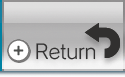

The HOME Menu allows you to exit the software you're playing, configure your Wii Remote settings, and check the status of your Wii Remote controllers' batteries.
6 |
HOME Menu |
 |
Displaying the HOME Menu Press Navigating the HOME Menu 
Wii Remote Settings This screen allows you to set the volume of the speaker,
|
 |
 |
 |